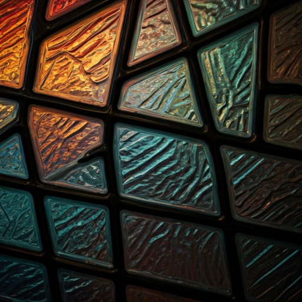
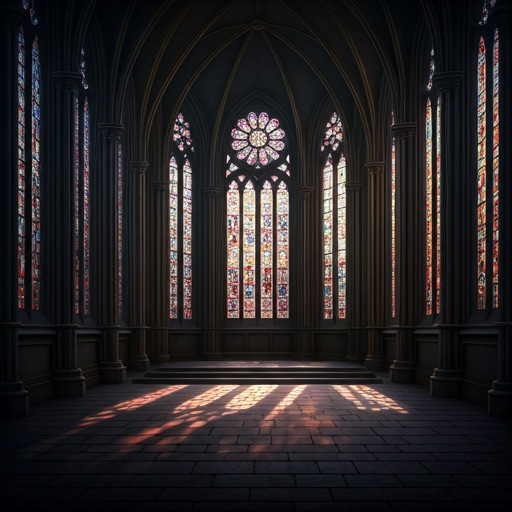

Prism Light
Experience the digital sublime through our fragmented lens. Every pixel is a shard, every layout a cathedral of vibrant illumination and structured shadow.
Luminous Art

Masterpiece
The Great Rose Array
A generative masterpiece that calculates light diffraction across 4,000 unique glass vertices in real-time.
diamond
Facet Geometry
Mathematical precision in every fragment.
Refraction Engine
Luminosity
98%
Diffusion
Soft
Saturation
Vibrant

ARCHITECTURAL VOID
The Cathedral of Code
Our structural framework mimics the heavy masonry of ancient basilicas, providing a rigid skeleton for the ethereal dance of light and color. By combining Brutalist grid systems with the fluidity of glass, we create interfaces that feel both grounded and celestial.
-
architectureStructural Integrity
-
flareChromatic Depth
Select Your Palette
R
Ruby Sanctum
B
Sapphire Vault
G
Amber Glint
V
Violet Veil